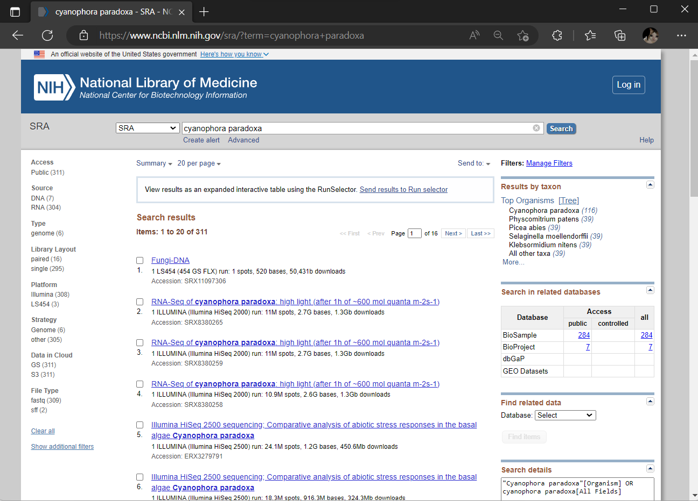
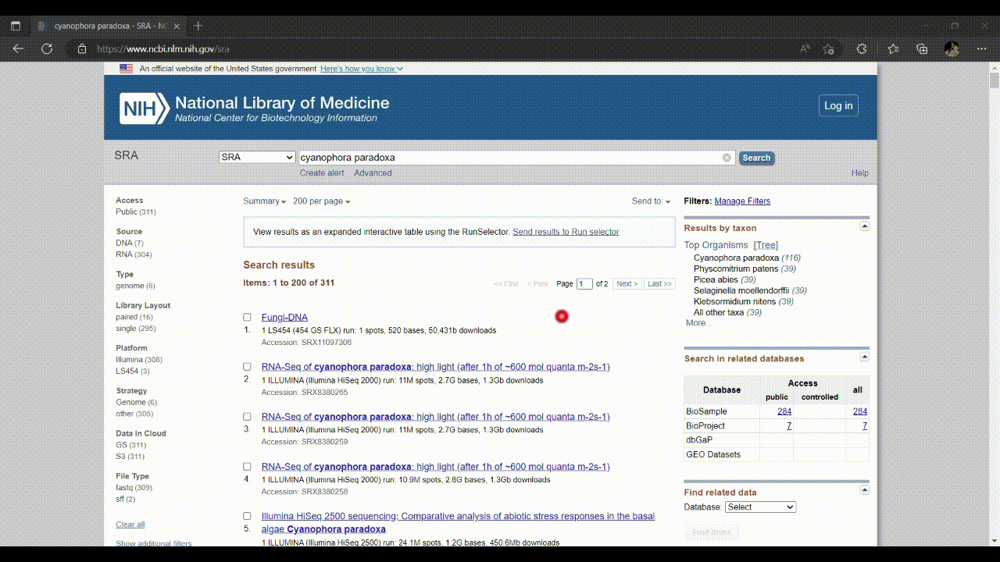

| Run | Assay.Type | AvgSpotLen | Bases | BioSample | Bytes | Center.Name | Consent | DATASTORE.filetype | DATASTORE.provider | DATASTORE.region | Experiment | Instrument | Library.Name | LibraryLayout | LibrarySelection | LibrarySource | Organism | Platform | ReleaseDate | create_date | version | Sample.Name | SRA.Study | BioProject | ENA.FIRST.PUBLIC..run. | ENA_first_public | ENA.LAST.UPDATE..run. | ENA.LAST.UPDATE | External_Id | INSDC_center_alias | INSDC_center_name | INSDC_first_public | INSDC_last_update | INSDC_status | Sample_Name | Submitter_Id | Broker_name | Developmental_stage | Experimental_Factor._stimulus..exp. | Genotype | growth_condition | Organism_part | stimulus | Experimental_Factor._organism..exp. | Experimental_Factor._time..exp. | Experimental_Factor._growth_condition..exp. | common_name | BioSampleModel | geo_loc_name_country | geo_loc_name_country_continent | geo_loc_name | Isolate | TISSUE | Collection_Date | Isolation_source | BIOMATERIAL_PROVIDER | dev_stage | Temp | TREATMENT | BREED | culture.collection | sequencer | source_mat_id | tissue_type | Host | Lat_Lon | Sample_Type | Strain |
|---|---|---|---|---|---|---|---|---|---|---|---|---|---|---|---|---|---|---|---|---|---|---|---|---|---|---|---|---|---|---|---|---|---|---|---|---|---|---|---|---|---|---|---|---|---|---|---|---|---|---|---|---|---|---|---|---|---|---|---|---|---|---|---|---|---|---|---|---|
| SRR8306028 | RNA-Seq | 300 | 3373326900 | SAMN10588740 | 1950953927 | HHU DUESSELDORF | public | fastq,run.zq,sra | s3,ncbi,gs | gs.US,s3.us-east-1,ncbi.public | SRX5120515 | Illumina HiSeq 2000 | Cyanophora dark III | PAIRED | cDNA | TRANSCRIPTOMIC | Cyanophora paradoxa | ILLUMINA | 2019-08-05T00:00:00Z | 2018-12-17T16:48:00Z | 1 | Cyanophora_dark | SRP173157 | PRJNA509798 | NA | NA | NA | NA | NA | NA | NA | NA | NA | NA | NA | NA | NA | NA | NA | NA | NA | NA | NA | NA | NA | NA | NA | Plant | Denmark | Europe | Denmark: obtained from the Scandinavian culture collection of Algae & Protozoa (SCCAP) | SCCAP K-0262 | unicells | NA | NA | SCCAP K-0262 | exponential | 15 °C | 0 µmol quanta m-2s-1 | NA | NA | NA | NA | NA | NA | NA | NA | NA |
| SRR8306029 | RNA-Seq | 300 | 3361510200 | SAMN10588740 | 1882426113 | HHU DUESSELDORF | public | run.zq,fastq,sra | s3,ncbi,gs | gs.US,s3.us-east-1,ncbi.public | SRX5120514 | Illumina HiSeq 2000 | Cyanophora dark II | PAIRED | cDNA | TRANSCRIPTOMIC | Cyanophora paradoxa | ILLUMINA | 2019-08-05T00:00:00Z | 2018-12-17T16:44:00Z | 1 | Cyanophora_dark | SRP173157 | PRJNA509798 | NA | NA | NA | NA | NA | NA | NA | NA | NA | NA | NA | NA | NA | NA | NA | NA | NA | NA | NA | NA | NA | NA | NA | Plant | Denmark | Europe | Denmark: obtained from the Scandinavian culture collection of Algae & Protozoa (SCCAP) | SCCAP K-0262 | unicells | NA | NA | SCCAP K-0262 | exponential | 15 °C | 0 µmol quanta m-2s-1 | NA | NA | NA | NA | NA | NA | NA | NA | NA |
| SRR8306032 | RNA-Seq | 300 | 3378668400 | SAMN10588739 | 1903910409 | HHU DUESSELDORF | public | sra,run.zq,fastq | gs,s3,ncbi | ncbi.public,gs.US,s3.us-east-1 | SRX5120511 | Illumina HiSeq 2000 | Cyanophora light II | PAIRED | cDNA | TRANSCRIPTOMIC | Cyanophora paradoxa | ILLUMINA | 2019-08-05T00:00:00Z | 2018-12-17T16:44:00Z | 1 | Cyanophora_normal light | SRP173157 | PRJNA509798 | NA | NA | NA | NA | NA | NA | NA | NA | NA | NA | NA | NA | NA | NA | NA | NA | NA | NA | NA | NA | NA | NA | NA | Plant | Denmark | Europe | Denmark: obtained from the Scandinavian culture collection of Algae & Protozoa (SCCAP) | SCCAP K-0262 | unicells | NA | NA | SCCAP K-0262 | exponential | 15 °C | ~ 50 µmol quanta m-2s-1 | NA | NA | NA | NA | NA | NA | NA | NA | NA |
| SRR8306033 | RNA-Seq | 300 | 3386020200 | SAMN10588739 | 1892499340 | HHU DUESSELDORF | public | fastq,run.zq,sra | ncbi,s3,gs | gs.US,ncbi.public,s3.us-east-1 | SRX5120510 | Illumina HiSeq 2000 | Cyanophora light I | PAIRED | cDNA | TRANSCRIPTOMIC | Cyanophora paradoxa | ILLUMINA | 2019-08-05T00:00:00Z | 2018-12-17T16:35:00Z | 1 | Cyanophora_normal light | SRP173157 | PRJNA509798 | NA | NA | NA | NA | NA | NA | NA | NA | NA | NA | NA | NA | NA | NA | NA | NA | NA | NA | NA | NA | NA | NA | NA | Plant | Denmark | Europe | Denmark: obtained from the Scandinavian culture collection of Algae & Protozoa (SCCAP) | SCCAP K-0262 | unicells | NA | NA | SCCAP K-0262 | exponential | 15 °C | ~ 50 µmol quanta m-2s-1 | NA | NA | NA | NA | NA | NA | NA | NA | NA |
| SRR8306034 | RNA-Seq | 300 | 3436771500 | SAMN10588740 | 1902846665 | HHU DUESSELDORF | public | fastq,run.zq,sra | ncbi,s3,gs | gs.US,ncbi.public,s3.us-east-1 | SRX5120509 | Illumina HiSeq 2000 | Cyanophora dark I | PAIRED | cDNA | TRANSCRIPTOMIC | Cyanophora paradoxa | ILLUMINA | 2019-08-05T00:00:00Z | 2018-12-17T16:38:00Z | 1 | Cyanophora_dark | SRP173157 | PRJNA509798 | NA | NA | NA | NA | NA | NA | NA | NA | NA | NA | NA | NA | NA | NA | NA | NA | NA | NA | NA | NA | NA | NA | NA | Plant | Denmark | Europe | Denmark: obtained from the Scandinavian culture collection of Algae & Protozoa (SCCAP) | SCCAP K-0262 | unicells | NA | NA | SCCAP K-0262 | exponential | 15 °C | 0 µmol quanta m-2s-1 | NA | NA | NA | NA | NA | NA | NA | NA | NA |
| SRR8306035 | RNA-Seq | 300 | 3436308000 | SAMN10588739 | 1909811743 | HHU DUESSELDORF | public | run.zq,fastq,sra | s3,gs,ncbi | gs.US,s3.us-east-1,ncbi.public | SRX5120508 | Illumina HiSeq 2000 | Cyanophora light III | PAIRED | cDNA | TRANSCRIPTOMIC | Cyanophora paradoxa | ILLUMINA | 2019-08-05T00:00:00Z | 2018-12-17T15:00:00Z | 1 | Cyanophora_normal light | SRP173157 | PRJNA509798 | NA | NA | NA | NA | NA | NA | NA | NA | NA | NA | NA | NA | NA | NA | NA | NA | NA | NA | NA | NA | NA | NA | NA | Plant | Denmark | Europe | Denmark: obtained from the Scandinavian culture collection of Algae & Protozoa (SCCAP) | SCCAP K-0262 | unicells | NA | NA | SCCAP K-0262 | exponential | 15 °C | ~ 50 µmol quanta m-2s-1 | NA | NA | NA | NA | NA | NA | NA | NA | NA |
3 Data Retrieval with NCBI SRA Toolkit
NCBI (Natianal Center for Biotechnology Information) is a major source of biological databases related to life and health sciences research, as well as a major source of bioinformatics tools and services. NCBI hosts various types of biological data submitted by researchers from around the world, such as GenBank for nucleotide sequence submissions, Sequence Read Archive (SRA) for raw sequence data, Genome for submitting full or draft genomes, Gene Expression Omnibus (GEO) for quantitative gene expression data sets, and many more.
NCBI SRA toolkit is a set of utilities for downloading, viewing, and searching large amounts of high-throughput sequencing data from the NCBI SRA database.
SRA toolkit can
- Effectively download the large volume of high-throughput sequencing data
- Convert SRA file into other biological file format
- Retrieve a small subset of large files
- Search within SRA files and fetch specific sequences

3.1 What is Sequence Read Archives (SRA)
The Sequence Read Archive (SRA) is the largest publicly accessible repository for high-throughput sequencing data. SRA accepts data from all areas of sequencing projects as well as metagenomics and environmental studies. Sequencing data may be isolated from a single species or from multiple species as in metagnomics studies.
SRA also refers in the file description to the format defined by NCBI for NGS data in the SRA database. All data submitted to NCBI must be stored in SRA format and can be converted back to a FASTQ, FASTA, or BAM file depending on the original submission by the researchers. Here, the SRA Toolkit provides tools for downloading data, converting various data formats to SRA format and vice versa, and extracting SRA data to other formats.
Researchers often use SRA data to make discoveries and conduct reproducible research. Data sets can be compared using the SRA web interface. However, if you want to download files for local use on your computer, you should use a command line interface, and the SRA Toolkit is highly recommended by NCBI.
3.2 Searching RNA-Sequencing datasets in NCBI
The databases in NCBI are linked by some common features. This means that you can start wherever you have your research problems in NCBI. In this workshop, we will investigate transcriptional changes during light exposure of the alga Cyanophora paradoxa, a representative species of Glaucophytes. For more information about this alga, please see this article in Science.
Activity
You can easily search the SRA database for any keywords of interest related to your research. In this context, we search for all SRA studies related to C. paradoxa and see what SRA provides us. Note that the SRA database contains not only transcriptome studies, but also genomes and metagenomes.
- Go to SRA database: https://www.ncbi.nlm.nih.gov/sra, and search for ‘cyanophora paradoxa’.

- We’ll adjust our selection using the tool in the SRA database, the SRA Run Selector, as follows.

- In the SRA Run Selector, you can customize the filters based on the metadata columns of all runs. In this case, we filter the SRA runs based on the assay type as RNA-Seq and select only paired-end sequencing data as follows.

- Then you can select which runs you want to download and perform analysis. In this workshop we’ll select C. paradoxa RNA-Seq reads from SRR8306028, SRR8306029, SRR8306032, SRR8306033, SRR8306034 and SRR8306035.

- The downloaded metadata is in comma-separated file format. So you can open them with spreadsheet programs like Microsoft Excel on your local laptop. The metadata looks like this.
3.3 Downloading SRA runs using fasterq-dump
fasterq-dump are tools in the SRA toolkit used to connect from our remote server to the NCBI server and download sequencing data from SRA.
According to the NCBI sra-tools’ guideline, using fasterq-dump in combination with another tool, prefetch, is the better way to download data because prefetch can be invoked at any time if the previous download accidentally failed. So it is not necessary to start the download from the beginning.
However, prefetch can sometimes be skipped if you want to download a small amount of data. In this workshop we’ll use only fasterq-dump to download and process SRA file format to FASTQ file for further analysis.
Activity
We’ll do the following command in Terminal or MobaXterm, by access to the username and password that we’ve provided.
For mobaXterm, enter to your session.
For terminal, type
ssh <username>@<server IP address>Now we download RNA-Seq libraries from C. paradoxa using the SRA accessions listed in the first column of the metadata above using the following command.
Activate analysis environment
conda activate ncbiGo to working directory
cd ~/Cpa_RNASeq/01_RawdataRun fasterq-dump
fasterq-dump --threads 2 --progress \
SRR8306028 SRR8306029 SRR8306032 \
SRR8306033 SRR8306034 SRR8306035From the fasterq-dump command,
--threads refer to how many threads to use (default = 6).
--progress force the terminal to print the progress of downloading and processing file to the screen.
Expected output files.
01_Rawdata
├── SRR8306028_1.fastq
├── SRR8306028_2.fastq
├── SRR8306029_1.fastq
├── SRR8306029_2.fastq
├── SRR8306032_1.fastq
├── SRR8306032_2.fastq
├── SRR8306033_1.fastq
├── SRR8306033_2.fastq
├── SRR8306034_1.fastq
├── SRR8306034_2.fastq
├── SRR8306035_1.fastq
└── SRR8306035_2.fastqBy default, fasterq-dump processes a single SRA file format of paired-end reads by splitting reads into forward (*_1.fastq) and reverse (*_2.fastq), if singletons (unpaired between forward and reverse reads) present, it will be written to another fastq file as described in this figure.

3.4 Reference Sources
- Price, Dana C., et al. “Cyanophora paradoxa genome elucidates origin of photosynthesis in algae and plants.” Science 335.6070 (2012): 843-847. https://doi.org/10.1126/science.1213561.
- SRA Toolkit: the SRA database at your fingertips from NCBI Insights. Accessed 4-Mar-2023.
- How to use NCBI SRA Toolkit effectively by Renesh Bedre, Data science blog. Accessed 4-Mar-2023.
- HowTo: fasterq dump by NCBI sra-tools GitHub Wiki. Accessed 4-Mar-2023.